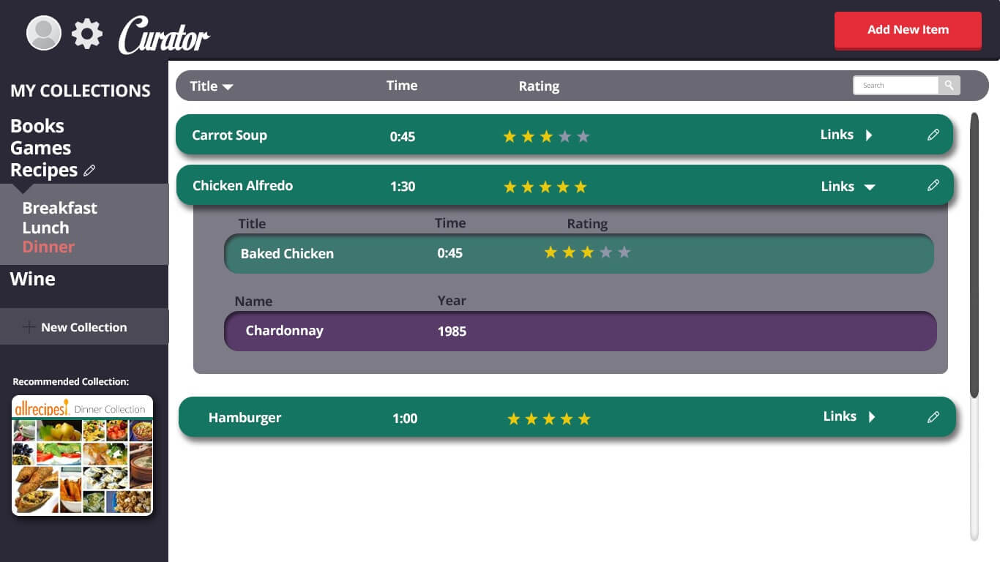

This project was done for CSCI 3002, Human Centered Computing Design & Development. My team and I created this interface for an application designed for collectors and hobbyists to store and manage their collections. My main role was visual design and user testing. Shown is our finished project. To see our design process, scroll down.
When ideating our project, my team was inspired by the community of collectors of all types, and wanted to provide them with a way to manage their different collections. Initially, we were inspired by websites such as GoodReads, and VGCollect, apps that help readers and gamers store their collections, respectively. We also looked into more broad collection management sites, like Pinterest. We found two areas in these existing collection sites we thought could use improvement:
Based on the problems we identified, we focused in on some key features
We began with initial prototypes and information architechture on paper, which we later translated to illustrator for our deliverables.
We performed a cognitive walkthrough on three different tasks within our app: Creating a new collection, Adding an item to a collection, and Editing the collection template. We noticed that the creation of a new collection with different attributes was challenging for the users, and they expressed some general confusion about our application.
Here are some key notes from our think-aloud protocol:
After user-testing our application, we recognized there was a lot of confusion about our app, so we went back to the drawing board (literally). One of the most confusing things about our app for the user was the concept of creating a collection, and this was a huge part of our redesign.